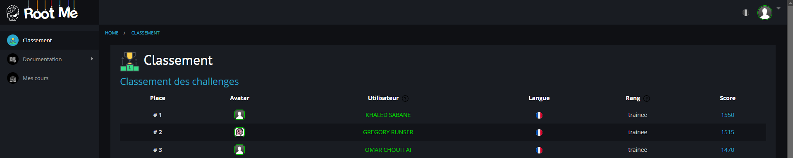

Omar Chouffai
UE3.Cyber.4 – Sécuriser un SI
Cette UE nous a formés à détecter, analyser et corriger les vulnérabilités : élaboration de scénarios d'intrusion, application de contre-mesures, rédaction de rapports d'audit ; l'ensemble s'appuie sur les composantes essentielles CE4.01 à CE4.05.
SAE3.Cyber.04 – Découvrir le pentesting
Objectifs
- Comprendre la démarche d'audit d'intrusion : reconnaissance, exploitation, post-exploitation.
- Se familiariser avec les outils de base (nmap, hydra, gobuster, Burp Suite, metasploit).
Déroulement
Pendant la SAE, nous avons réalisé :
- 💡 26 challenges Root Me (web, réseau, crypto) pour consolider la méthodologie.
- 🛠️ ateliers guidés : scan réseau, brute-force HTTP, xss & injections SQL.
Résultat
3ᵉ place au classement Root Me Académique : 1 470 pts.
Compétences acquises
- Collecte d'informations et cartographie d'un SI.
- Exploitation de failles courantes (OWASP Top 10).
- Rédaction de comptes-rendus d'audit et recommandations.
SAE4.Cyber.01 – Sécuriser un système d'information
Objectifs
- Déployer et sécuriser une infrastructure réseau complète
- Mettre en place des services critiques avec haute disponibilité
- Implémenter une Infrastructure à Clés Publiques (IGC)
- Configurer des services d'annuaire et d'authentification
Services déployés
Durant cette SAE, nous avons mis en place les services suivants :
- 🌐 DNS sécurisé (BIND9) : configuration de zones DNS directes et inverses
- 🔐 IGC complète : création de certificats racine, serveur et client
- 📁 Annuaire LDAP sécurisé : authentification centralisée avec LDAPs (TLS)
- 🔒 VPN OpenVPN : accès distant sécurisé avec routage et filtrage
- 📂 NFS avec authentification PAM : partage de fichiers sécurisé
- 🌍 Serveur Web haute disponibilité : Apache2/Nginx avec load balancing et HTTPS
- 📧 Messagerie sécurisée : Postfix (SMTP) + Dovecot (IMAP) avec authentification LDAP
- 🔄 Proxy authentifiant Squid
Compétences techniques acquises
- Architecture réseau : plan d'adressage IP, routage avancé, règles de filtrage
- Virtualisation : création et gestion de VMs Linux Debian sur VirtualBox
- Sécurité : mise en place de chiffrement TLS/SSL sur tous les services
- Haute disponibilité : configuration de services redondants
- Analyse : lecture et interprétation des logs système
Présentation et évaluation
Présentation technique de 10 minutes (5 min + 5 min questions) incluant :
- Démonstration vidéo des services déployés
- Schémas détaillés de l'architecture réseau
- Justification des choix techniques
- Évaluation des risques de sécurité
Résultat
Mise en place réussie d'une infrastructure complète et sécurisée, démontrant une maîtrise des services réseau critiques et des bonnes pratiques de sécurité.